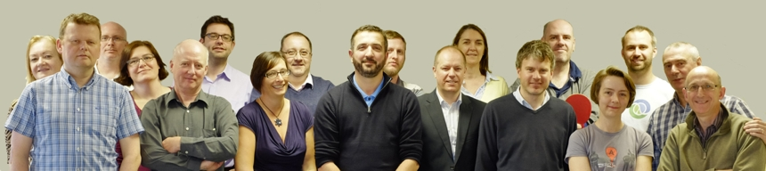
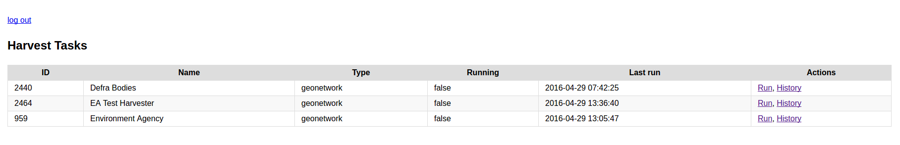
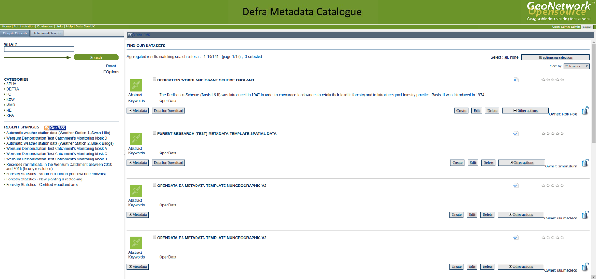
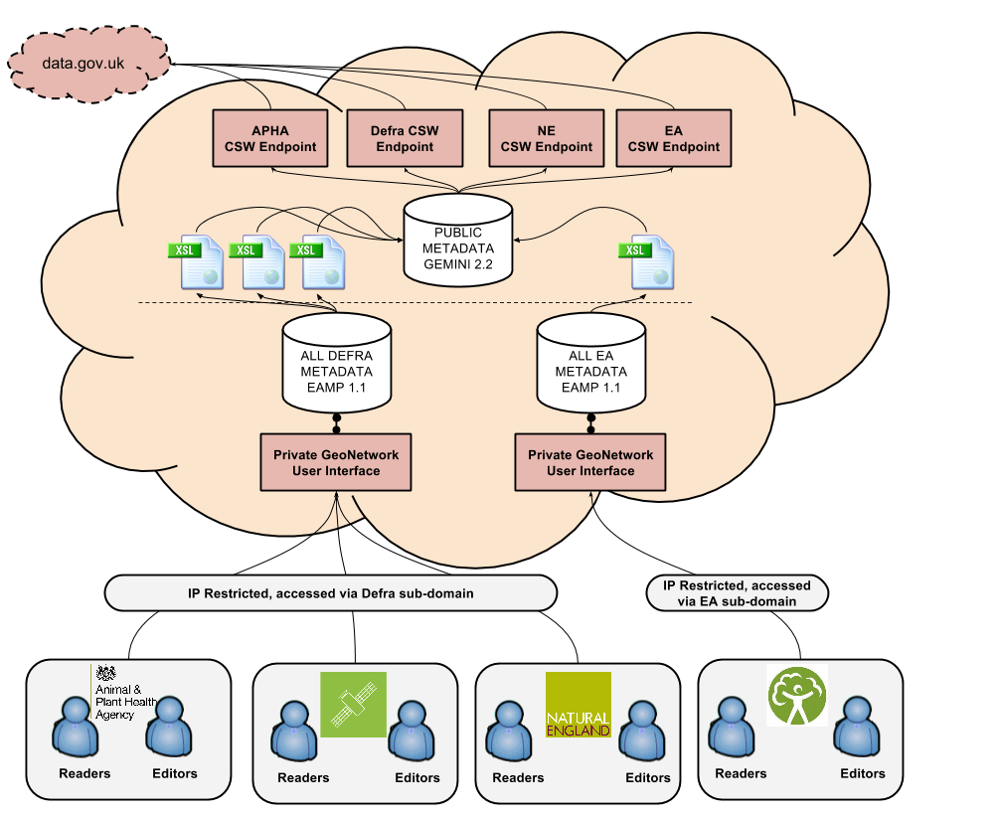
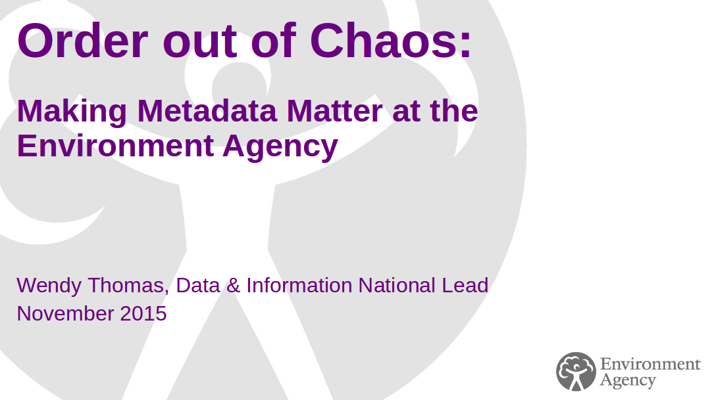
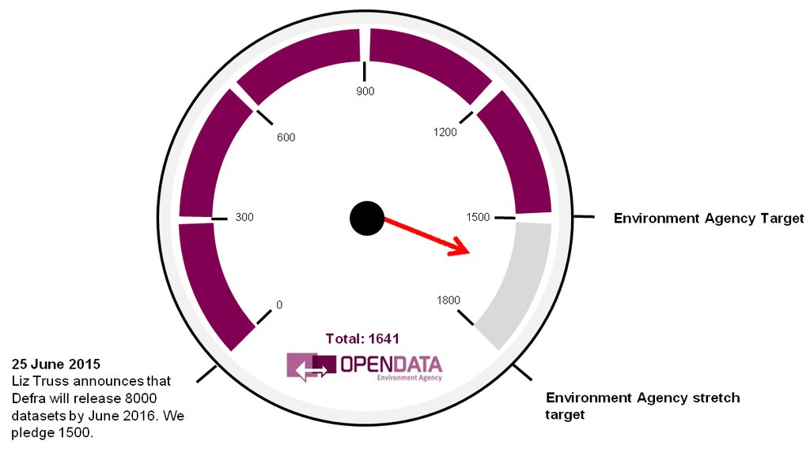
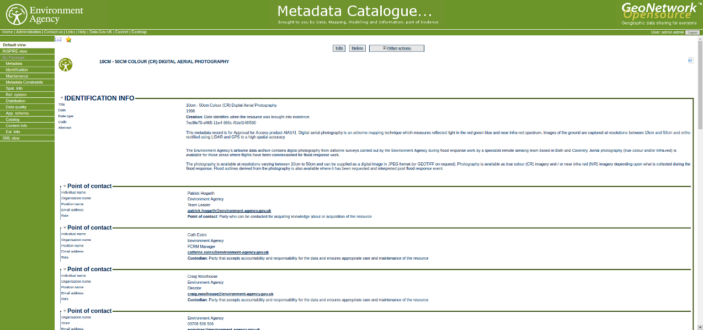
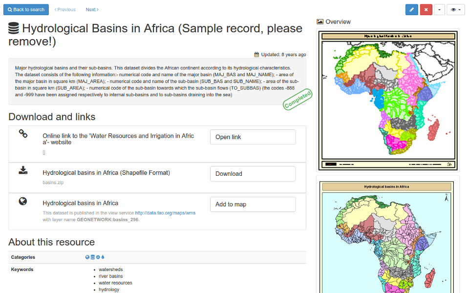
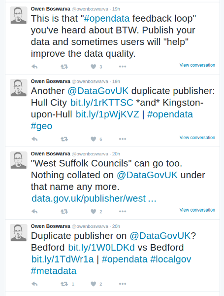

Spatial Data Management at the Environment Agency
A Technical Perspective
Jo Cook | Astun Technology | @archaeogeek
http://archaeogeek.github.io/uclbigdata_2016
Who are Astun Technology?
We're a geospatial consultancy, established in 2006, supplying enterprise geospatial solutions to a wide-range of customers, based on the open source geospatial stack.
Our customers include, but are not limited to, local and central government, emergency services, and transport management.
Project Background
In 2013 the Environment Agency made a strategic decision to improve and streamline metadata management within their agency, to meet internal business requirements and publishing to data.gov.uk, ensuring compliance with INSPIRE and UK Gemini.Astun's Involvement
Astun won the tender to provide this service, began work in 2014 and completed the project in 2015(*)
(*) We are now providing ongoing support to the Environment Agency, as well as working on additional phases of work and enhancements to the service
Requirements
The EA had a set of functional and non-functional requirements that this system needed to meet from the start (*):
- INSPIRE/Gemini 2.2 compliance
- Spatial and non-spatial records
- Schematron-based metadata validation
- Browser-based and externally hosted
- Capable of handling 14,000 records and 150 concurrent users
- Strict security
(*) These requirements have evolved and been added to throughout the project
The Infrastructure and Software
The basic platform comprises the Geonetwork metadata catalogue, backed by the PostgreSQL database server, with PostGIS and Auditing extensions installed
These are installed on a set of Amazon Web Servers (AWS and RDS), with backups in different availability zones, IP restricted access, separate development servers and so on.
Why Geonetwork?
It's the leading open source metadata catalogue tool, with full support for UK Gemini/INSPIRE, and a graphical user interface for viewing, creating and editing data.
It also contains a set of back-end services for working with the metadata programatically
Why PostgreSQL?
We use PostgreSQL to store the metadata and catalogue configuration, and PostGIS to store the spatial indices for geographic searches
The use of the Audit extension means we can track changes made to both metadata records and the catalogue configuration (users, groups, metadata categories etc) and roll back individual changes as necessary, recovering accidentally deleted or corrupted records, and tracking which user did what
We can also take daily/weekly snapshots of the database for disaster recovery and deploying test/development servers, and use the PgAdmin3 graphical user interface to query the data
System Enhancements
“Can we record additional metadata elements that are not part of INSPIRE/Gemini?”
“Yes, but we'll need to build you a new metadata profile that extends UK Gemini”
This became known as EAMP, and now allows custom validation rules for metadata, on top of what's required for UK Gemini
“Can we strip these elements, along with any personal details from metadata records before we publish them to data.gov.uk?”
“Yes, using XSL transformation scripts”
This now prevents internal users even printing copies of metadata records with personal details in
“Can we only publish some metadata to data.gov.uk but allow internal staff to view all completed records?”
“Yes, using a second public-facing server”
Records to be pubished to data.gov.uk are now pushed to a public server and anonymised, then served via CSW (catalog services for the web)
“Can we make changes to selected records in bulk without needing to download them all?”
“Yes, using python scripts and Geonetwork XML services”
We now have scripts to do a number of bulk changes to the data, such as publication date changes, internal contact detail changes and so on
Additional application to allow pushing from private to public server
Project Expansion
June 2015 statement by Liz Truss, Secretary of State for Environment, Food and Rural Affairs
“Defra has more broad, varied and rich data than any other government department... Over the next year (*) we will be making 8,000 datasets publicly available, in the biggest data giveaway that Britain has ever seen. Tech City people, developers, entrepreneurs, scientists, investors, NGOs, anyone with a great idea, will have full and open access.”
In other words, by June 2016
With very short notice, the EA solution was expanded to take on board 7 other Defra agencies, and the work to meet the June deadline is on target
Phew
So we spun up a second private Geonetwork server for the Defra bodies
Ending up with an architecture something like this
The Good, the Bad and the Ugly
The Good
The client seemed to think it was a success!
EA have already surpassed their OpenData release commitment
We've contributed enhancements to both Geonetwork Code and Documentation
We've released all of our customised code and helper scripts on GitHub
We've even contributed to the improvement of data.gov.uk!
The Bad
We had to stick with an old version of Geonetwork as the EA were on Internet Explorer 9
Versus Geonetwork 3
Certification
Government compliance certification meant we had to jump through fairly arcane hoops and add complexity to the system to get it certified
This was costly to implement, not always appropriate for the solution we have provided, and exacerbated by working with out-sourced ICT providers
The Ugly Annoying
Extending the system we built for the EA to include the other Defra bodies, at short notice, pushed the boundaries of how Geonetwork, and our additional code, is implemented
Upgrading the system to a later release of Geonetwork would mean we would need to go through compliance testing again
Some of the coding decisions in Geonetwork core are ...interesting
This all leaves us with some technical debt and "challenging" work-arounds
People care about what gets published to data.gov.uk and will call you out for any mistakes/discrepancies
The Future
- Move to Geonetwork 3?
- Properly extend the architecture so that all Defra bodies have the same system as EA?
- Implement different metadata profiles such as Medin (for the Marine Management Organisation)?
- Integrate with external authentication mechanisms for user and password management?
Summing Up
The Environment Agency took the strategic decision, and some would say risk, to go with an open source solution for their metadata management
EA and Astun collectively have made this project a success, and helped some of the other Defra bodies meet their open data publishing commitments
The flexibility of open source has allowed us to cope with changing requirements throughout the project, albeit with some technical debt
Finish
That Github talk reference again:http://archaeogeek.github.io/uclbigdata_2016
Thanks for listening!
@archaeogeek / Jo Cook / Astun Technology